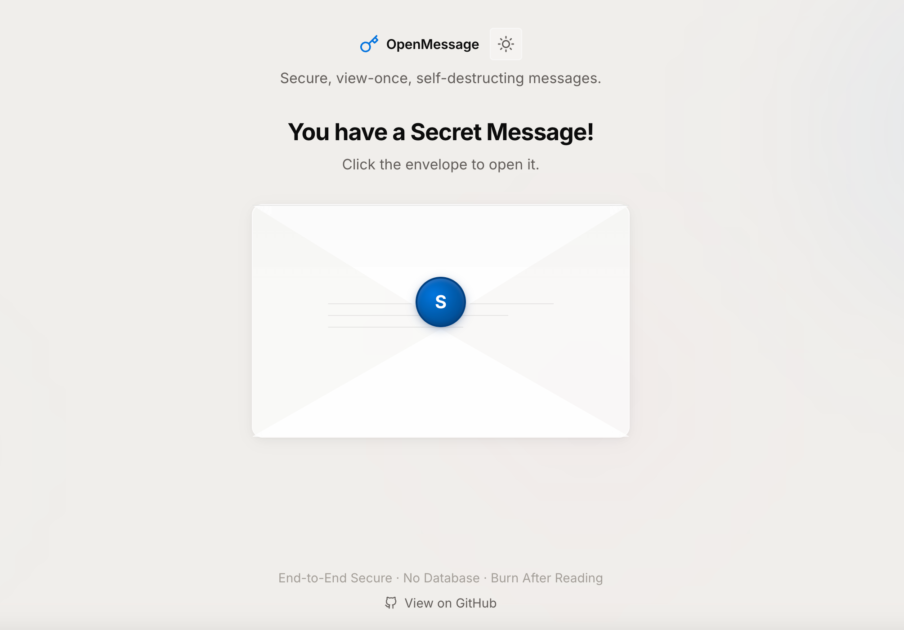
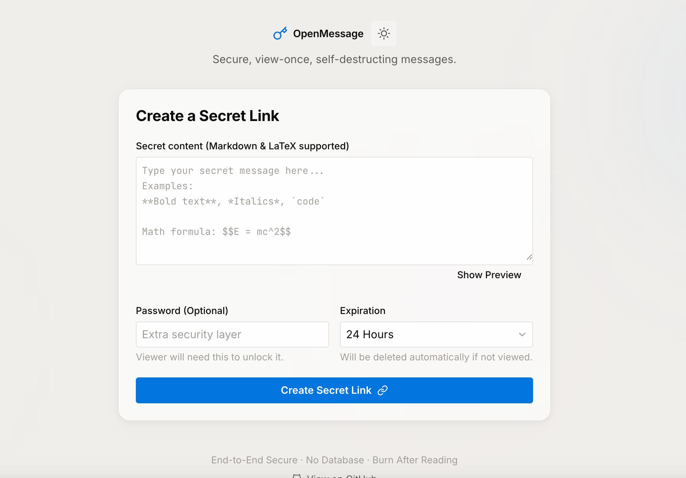
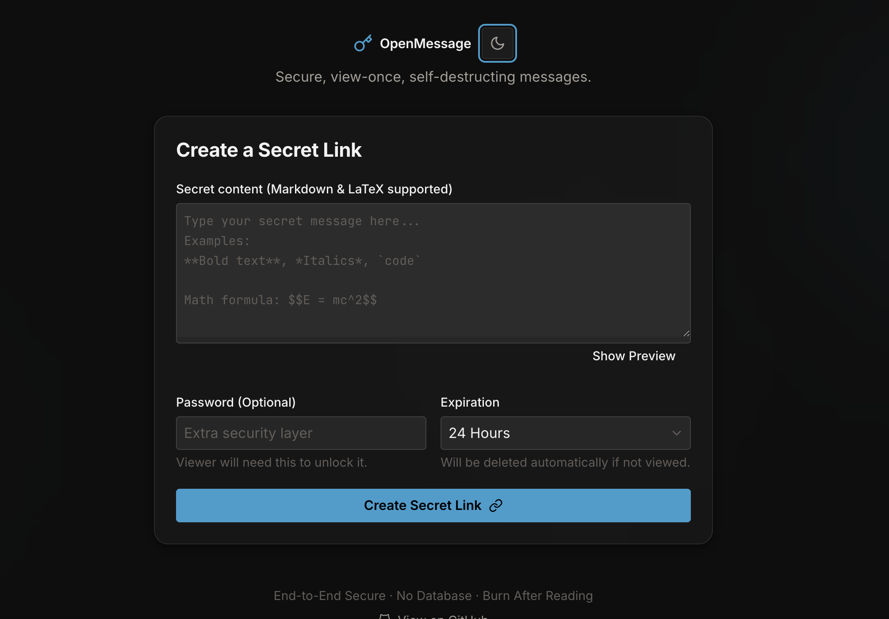

View-once messages
Messages are deleted from storage after a successful read, preserving the burn-after-reading guarantee.
Burn after reading
OpenMessage is a lightweight, self-hostable tool for creating encrypted, view-once messages without a database. Send a link, let the recipient open it, then remove the secret from the server.

Core features
OpenMessage focuses on one job: make short-lived secrets easy to share and hard to accidentally retain.
Messages are deleted from storage after a successful read, preserving the burn-after-reading guarantee.
Encrypted message records are stored as local JSON files for a simple deployment and backup story.
Add a second layer of protection for recipients before the secret can be revealed.
Link preview crawlers do not burn the message. Viewing requires an explicit recipient action.
Markdown and math rendering make it useful for notes, snippets, and formatted instructions.
Run it with Flask locally or behind Gunicorn in production with minimal infrastructure.
How it works


Security model
No key storage. The decryption key is returned to the client and never stored with ciphertext.
Atomic read lifecycle. A message is held during verification and only finished after successful decryption.
Retry-safe locks. Short file handoff windows return retryable conflicts instead of false not-found states.
Hardened routes. UUID validation, no-store cache headers, CSP, rate limits, and expiration checks are built in.
Self-host
OpenMessage is built with Python and Flask. Clone the repository, install dependencies, set a secret key for production, and run it behind your reverse proxy of choice.
git clone <repo-url>
cd openMessage
python3 -m venv venv
source venv/bin/activate
pip install -r requirements.txt
python app.py